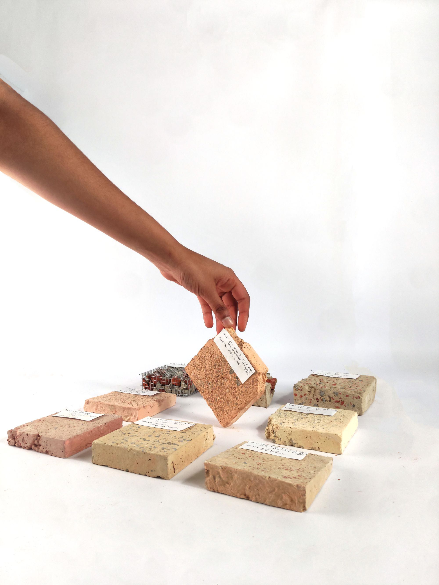
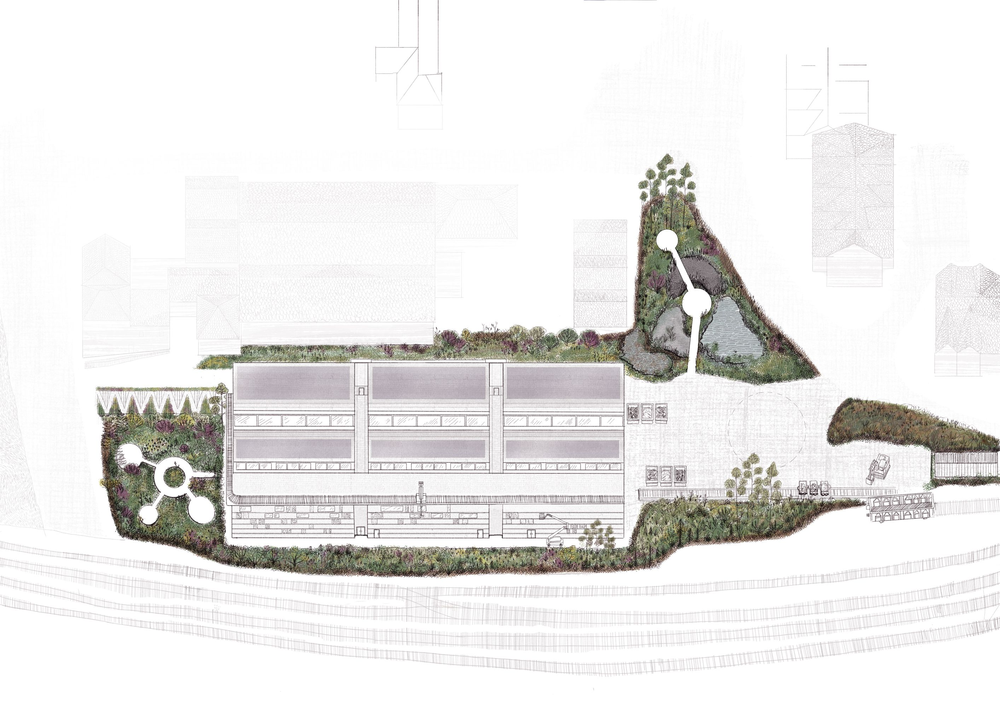
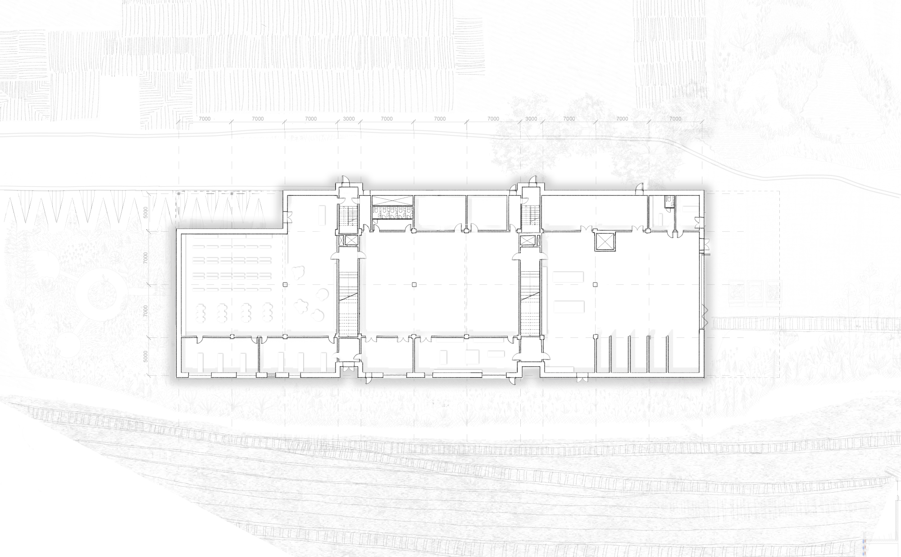
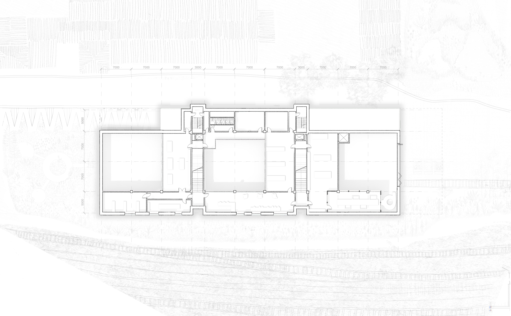
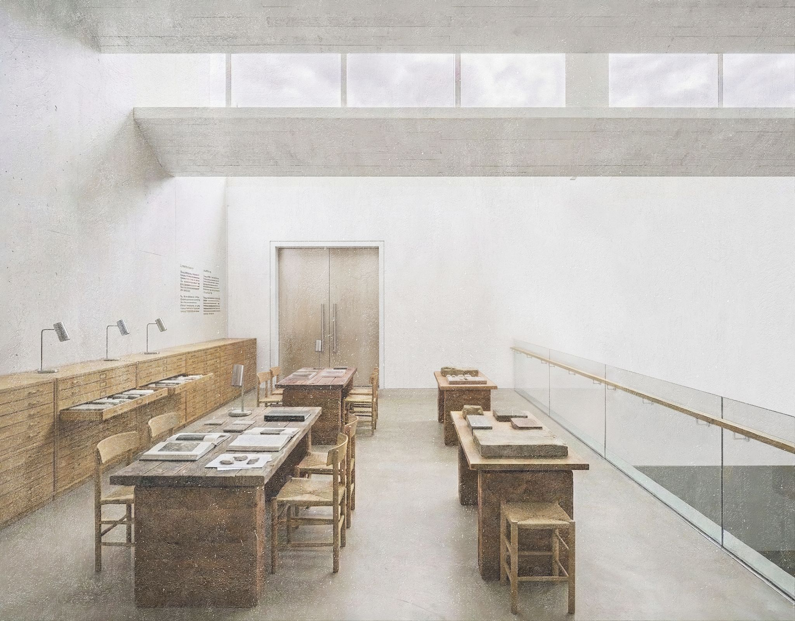
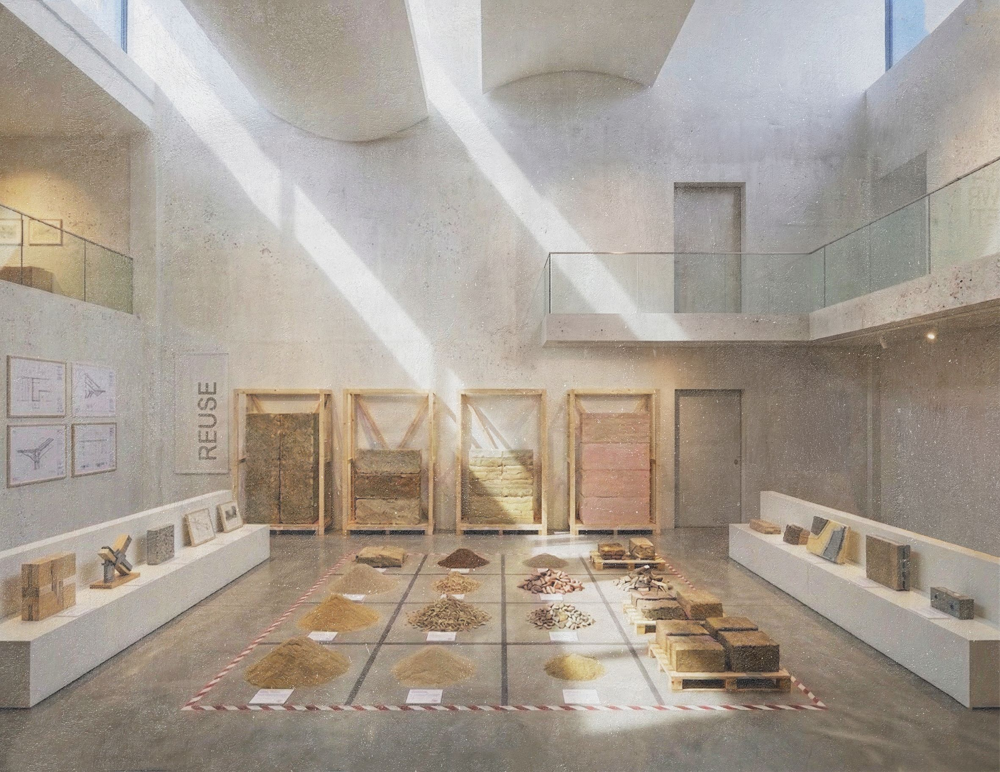

The UK produces demolition waste it cannot process. Every year, tonnes of brick,concrete, flint, and ceramic are trucked out to distant landfill sites. The East Goods Yard intercepts this material from source, transforms it into architectural products, and returns it to the city as civic infrastructure. The building is a foundry, research laboratory, and public archive occupying a long-neglected industrial site between Salisbury’s railway and main road.
The site strategy removes heavy freight from the city centre entirely. A reinstated railway siding brings demolition material directly into the building from the east, eliminating HGV traffic. From the west, a landscaped ramp carries visitors from the station approach up to the entrance - two opposed processions through the same building, announcing its dual identity before anyone steps inside.

The plan is tripartite: mine, social heart, archive. Three programmatic zones are separated by two compressed cross-axial voids that act simultaneously as acoustic airlocks, thermal buffers, vertical circulation cores, and spatial thresholds. Moving east to west through the building is moving through a process of transformation of materials.
The building is designed for flexibility. A regular, simple grid allows for variation in the floor plan. The concrete frame will outlast every other element, ready to receive whatever the next generation of Salisbury decides to make from what remains.


The structure is an honest hybrid. A recycled concrete frame carries the building’s loads and expresses its geological character. The shell roof is derived from a catenary curve: the geometry that puts recycled concrete, with its limited tensile strength, entirely in compression. Concrete monitor clerestories deliver diffuse north light as well as calibrated south light.

Internally, the archive stores the results. Sliding concrete plinths, hanging panes, and specimen drawer systems hold the physical record of every mix tested. The space is simultaneously a civic reading room and a working research repository - the point where industrial process meets public knowledge.


The facade is the building’s research programme made public. It carries interchangeable precast panels (e.g. cyclopean aggregate, Wa Pan, terrazzo, gabion) each one cast from the building’s own processed output. Panels are installed, weathered for months, documented, removed, and replaced with new batches. The facade changes over time, accumulating evidence of what recycled demolition concrete can do.
← Back to all projects